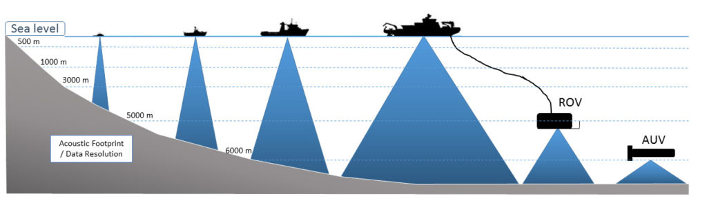

Seeing with Sound
Visual Soundings is a collection of images of the seabed created using sound waves (acoustics). Simple echosounders are common on many boats, giving the an indication of the water depth to the seabed. Echosounding and other techniques have been used for many years to make maps of the seabed, primarily for safety of navigation, based on the depth measurements (soundings).
More advanced acoustic techniques, most significantly multibeam echosounders (MBES) have revolutionised our knowledge of the shape and structure of the seabed over the last couple of decades. The seabed is far from featureless. It displays a myriad of patterns and structures which are not only important for scientific understanding of our planet, but which reveal the hidden beauty and curiosity of the earth’s surface beneath the waves. Acoustic imagery has been central to these advances in understanding and our appreciation of patterns and form.
MBES have now evolved to become the standard system for mapping the oceans, lakes and rivers. Bathymetric and backscatter (echo strength) data collected using MBES systems are commonly used for mapping the seabed for science, commercial fisheries construction as well as military purposes. Whilst until recently, the main focus was on deriving detailed and accurate bathymetric maps, the potential value of acoustic backscatter intensity for classifying the seafloor (sediment types, rock outcrops, benthic habitats) has been apparent for some time now, and today is reaching maturity. MBES are now expected to provide a complete picture of the seabed, i.e. both its topography and composition.
MBES use the acoustic reflection from a sequenced series of pulsed acoustic beams to map the seafloor and more recently, any detectable objects, bubbles or animals in the water column. Deployed from a ship from tens to thousands of meters above the seafloor, MBES provides a real-time picture of the seafloor. Unlike lasers, MBES acoustic pulses spread as they pass through the water column, so the resulting echoes are composite echoes from patches of the seafloor that (depending on water depth and the acoustic frequency used) can range from meters to tens of meters in diameter. Depth (bathymetry), composition (often indicated by backscatter) and the shape of the seafloor are key attributes of data used to generate seafloor maps of biophysical habitat, but the divergence of acoustic pulses (and their echoes) as they travel through the water column can make data acquisition and processing technically challenging. MBES data streams, combined with novel processing techniques, have provided remarkable insights into the distribution and properties of benthic and pelagic marine ecosystems in recent years.
Different acoustic platforms collect data at different spatial scales and different acoustic frequencies are used to map different water depths. Higher frequencies (> 100 kHz) are used for shallow water and low frequencies (< 30 kHz) for deep water. With different frequencies there is also a trade-off in resolution, with higher frequency shallow-water systems providing greater spatial resolution than lower frequency deep-water systems.

Traditionally, MBES systems have been ship hull mounted but more recently have been adapted to Remotely controled Underwater Vehicles (ROVS) and Autonomous Underwater Vehicles (AUVs). These underwater platforms can be used to characterise the local variability of the seabed by modifying the altitude (and hence the observation scale) of the ROV/AUV above the seabed
The ocean remains a glaring blind spot in the human imagination. Catastrophic events remind us of its depths and the challenges we have for navigating within it—a lost airplane, a shark attack, an oil spill, an underwater earthquake—but we tend to marginalize or misunderstand the vast scales of the ocean. The ocean represents the “other 71 percent” of our planet but unlike land, its surface and space continue to be largely a mystery to us.
Suggested further reading
Kearns, T., & Breman, J (2010) Bathymetry- the art and science of seafloor modeling for modern applications. Chapter 1 in: Breman, J., Ocean Globe. Redlands, California: ESRI Press Academic.
Harris, P.T. & Baker, E.K. eds., 2011. Seafloor Geomorphology as Benthic Habitat: GeoHab Atlas of seafloor geomorphic features and benthic habitats. Elsevier.
Todd, B.J. & Greene, H.G. eds., 2007. Mapping the seafloor for habitat characterization. Geological Association of Canada.